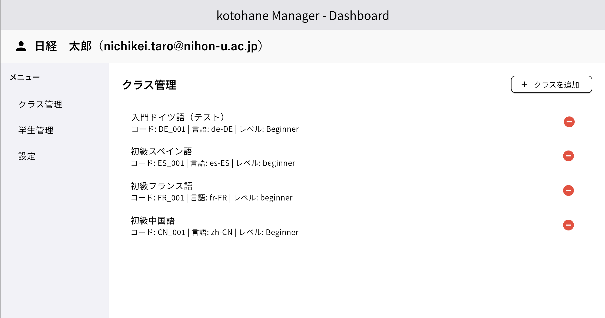
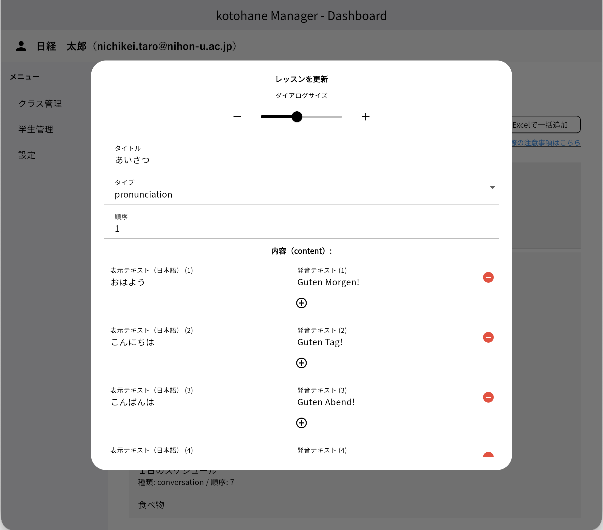
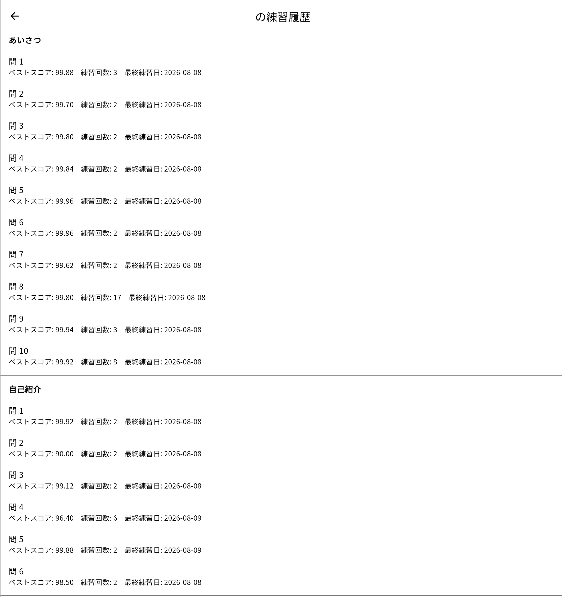

kotohane Manager
kotohane 教員用管理アプリ
kotohane Manager とは
学生用の発音練習アプリ「kotohane」で使う練習問題（レッスン）やクラスを、教員が管理するためのWebアプリです。PCのWebブラウザから利用します。
- 担当するクラスを作成し、評価基準や評価メッセージを設定できます。
- 単語・会話・スピーチの練習問題を、授業の教科書に合わせて登録できます。
- Excelファイルから練習問題を一括で登録・出力できます。
- クラス全体の練習状況や、学生ごとの練習履歴を確認できます。
- 日本大学のNU-Mailアカウントでログインして使用します。
※ 学生用アプリ（kotohane）は練習専用です。練習問題の作成・管理はこの kotohane Manager で行います。
クラス管理

- クラス名・クラスコード（例：FR_001）・年度・レベル（初級／中級／上級）を設定してクラスを作成します。
- 発音の評価基準（「優れた」「良い」と判定する点数のしきい値）を設定できます。
- 評価ごとに学生に表示するメッセージ（例：「すばらしい!!」「悪くないよ」「もう一度チャレンジしよう!」）を変更できます。
レッスン（練習問題）の作成

- クラスごとに、タイトル・練習タイプ（単語／会話／スピーチ）・表示順を指定してレッスンを追加します。
- 日本語の表示テキストと、発音練習用のテキストを組にして登録します。中国語では拼音も登録できます。
- 登録済みのレッスンは、あとから内容を編集できます。
学習状況の集計

- クラスの練習者数を確認できます。
- レッスンの問ごとに、練習者数・平均練習回数・平均点（ベストスコア）を一覧で確認できます。
- 学生がつまずいている問を見つけ、授業での指導に生かせます。
学生管理と練習履歴

- 担当クラスごとに、練習している学生の一覧を表示します。
- 学生ごとに、問ごとのベストスコア・練習回数・最終練習日を確認できます。
- 練習記録をExcelファイルに出力できます。
動作環境
- PC（Windows／Mac）のWebブラウザ（Google Chrome など）
- 日本大学のNU-Mailアカウントが必要です